NV Charts
- On your PC, the download and installation plugin can be made before or after the installation of the charts.
Get charts from NV-Verlag:
The NVC charts are purchased only from the German publisher NV Verlag.
- This website is multilingual. See at the top right on the homepage of the site the icons to change the language.
The charts in this editor ribs cover the following:
| For Europe area : | Other areas: |
| North Sea | Caribbean |
| Baltic Sea | East USA coast |
| English Channel |
| Atlantic Coast |
| Balearic Islands |
- Editor's note:
- In case of malfunction, particularly on Windows 8.1 and Windows 10, do not hesitate to contact NV-Verlag, using their website contact form.
- Experience shows that this chart editor is responsive and helps resolve many problems.
- The installation procedure of the charts is independent of OpenCPN
- It is possible to install the charts on two different computers,
- Free software charts display comes with charts. But it is “light” a product.
- Nautical charts are automatically installed in a specific folder proposed by the installer.
- But it is possible to choose the installation folder of charts as you wish.
- Other data, OpenCPN does not support, will install automatically in a prescribed folder.
- You can buy a “dongle” on which a facility is possible.
- In this case, by moving the dongle, it is possible to use the charts on other computers.
Installation charts procedure:
- For installation you must:
- have a CD-ROM, provided by the publisher, which contains:
- the installation software
- charts.
- or having proceeded to download:
- the installation software,
- charts.
- If you have a dongle, install the dongle into a USB port on your PC
- Note Well:
- This dongle does not appear in the list of equipment on the PC when using the Windows Explorer.
- Since the dongle can be used on another PC, the location of the charts in your PC is not listed on the dongle. Therefore, the name of the folder where the charts are placed does not matter.
- The charts will not be installed on the dongle.
- One of the two work permits nautical charts will be listed on the dongle.
- If you do not have a dongle, one of two installation permissions will be written on your PC.
- In any case, it is best to have a good internet connection to complete the installation.
- In the absence of internet access, there is a special procedure for installing.
- Run the installation software,
- Follow the instructions that appear on the screen knowing that sometimes to be patient.
Download and install the plugin:
The latest version is available here:
Download Plugin
- Save the file to your PC.
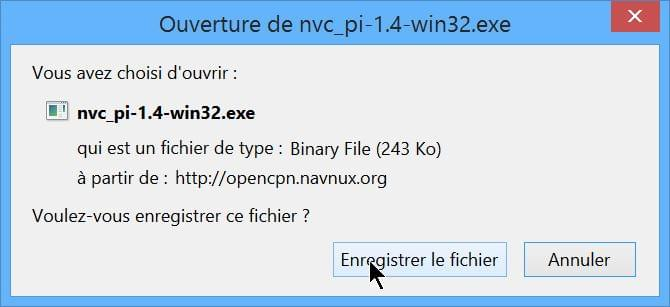
- This plug-in only works with windows
- After downloading the file, depending on the settings selected on your PC, click or double click it.
- For installation steps. Allow the installation to do.
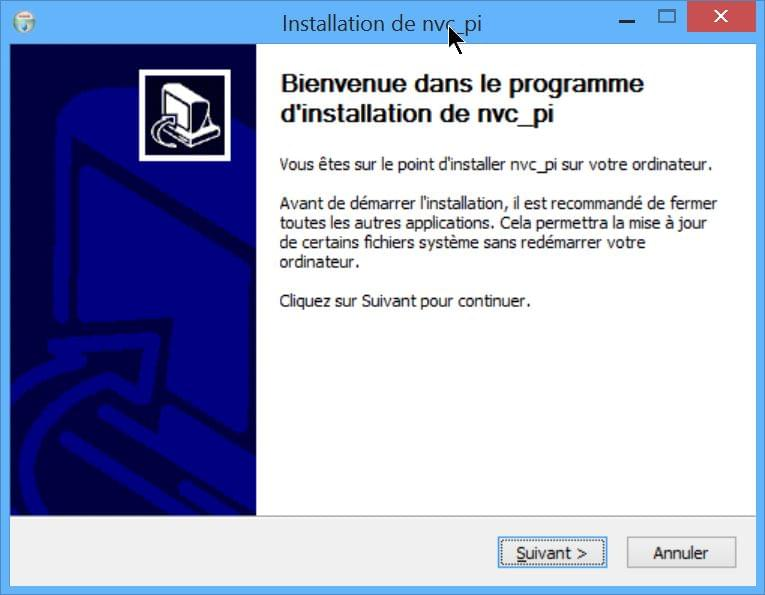 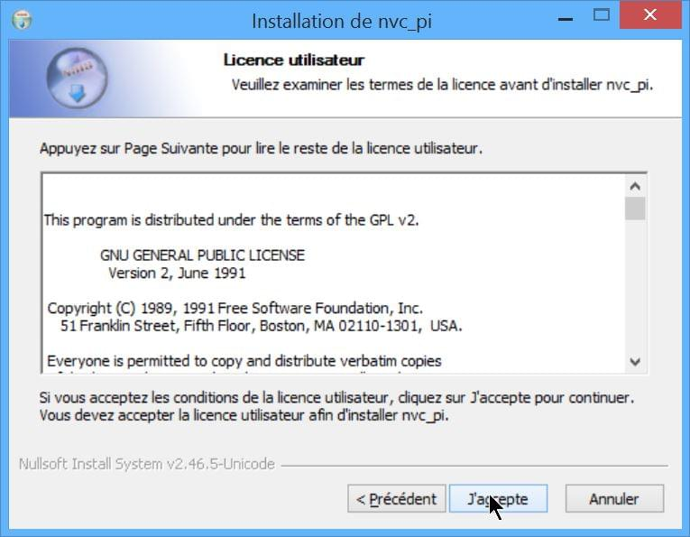
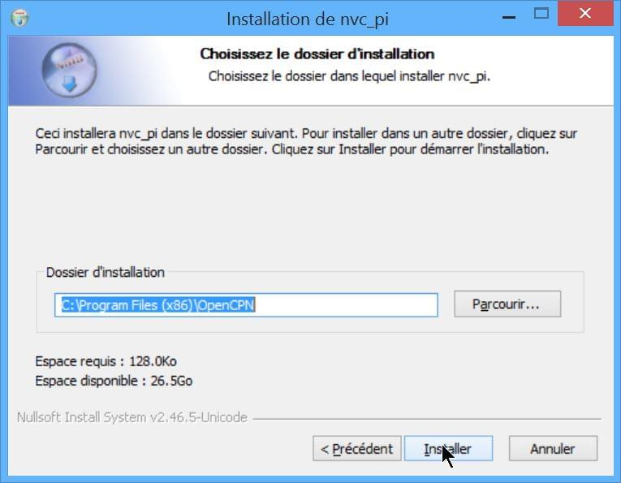 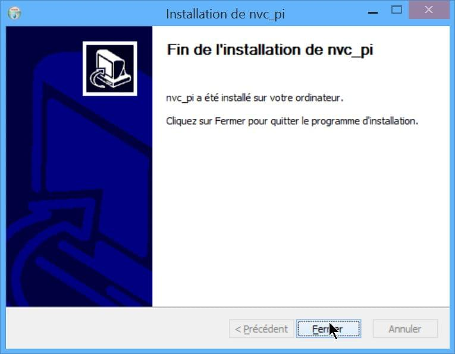
The installation will be done automatically in the “plugins” folder of the installation OpenCPN.
- Nota Bene :
- Once the installation done, the executable file which was used to carry, can be deleted from the PC.
Activation / De-activation of the plugin:
- After installing OpenCPN the icon bar at the top of the screen, has no additional icon.
- Lack of visual information makes it impossible to know whether the plug-in “NVC-Chart” is on.
Activation :
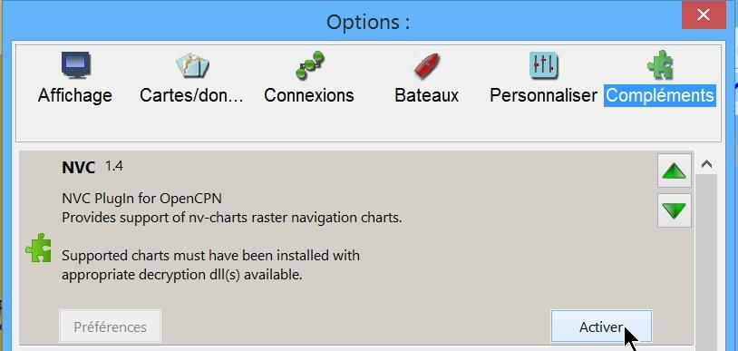
- Commissioning Tool “NVC-Chart”:
- Go to the “Toolbox”, “Plugins” tab,
- Click the “NVC-Chart” icon,
- Click the “Activate” button,
- Confirm with “Ok” or “Apply”.
Deactivate:
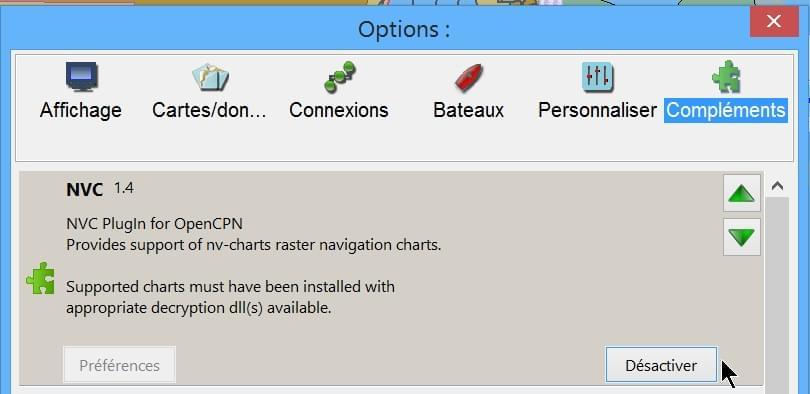
Go to the “Toolbox”, “PluginsIns” tab,
- Click the “NVC-Chart” icon,
- Click the “De-activate” button,
- Confirm with “Ok” or “Apply”.
Manual:
- Cases where the charts were installed directly on the computer with the access code.
- OpenCPN automatically recognizes their presence.
- The operating procedure is the same as with other charts. Just declare the directory charts in the “Maps” tab of the “Toolbox”
- Cases where the charts were installed on the computer and where the access code is on a dongle.
- You must insert the dongle into a USB port on the computer before launching OpenCPN.
- After that, the operating procedure is similar to that of other charts. Just declare the directory charts in the “Charts” tab of the “Options”.
- Each access to the charts, the dongle is red illuminated during the update of the database.
(see pictures below)
- If you use a dongle and if the dongle is removed, access to nautical charts is stoped.
- It is useless to put the dongle to try to regain access to nautical charts.
- We must restart the access procedure:
- close OpenCPN
- return the dongle
- restart OpenCPN
Retrieve Charts Previously Purchased.
To retrieve the charts I purchased earlier NVcharts directed me to this website: NV-Chart Download
There you can find the charts you purchased and you want to download by year of release.
I found the Windward Islands kit but couldn't find the Leeward Islands kit.
Enter the charts you need to download and click on the download button. The charts will be downloaded as an exe file. Run the exe file and enter your serial numbers, name and email and then it will install the charts. They recommend saving them in C:Chartkit/BSB. That's where I installed and then pointed Opencpn to that subdirectory and everything works well.
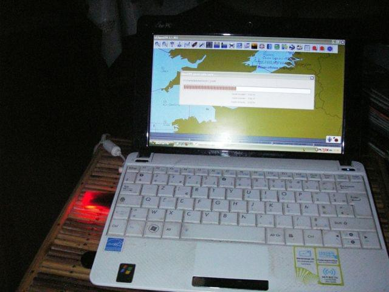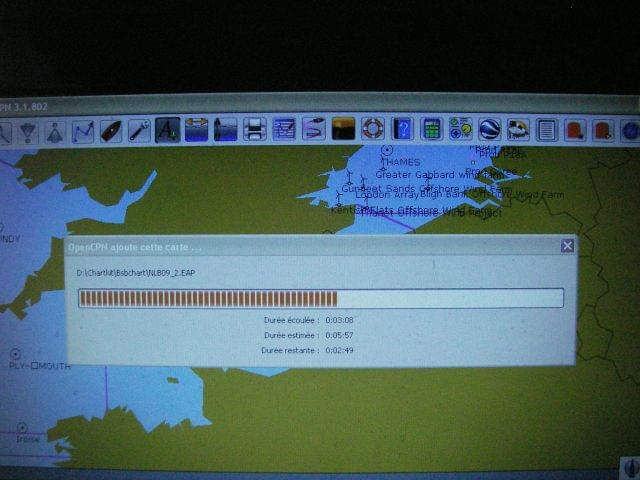
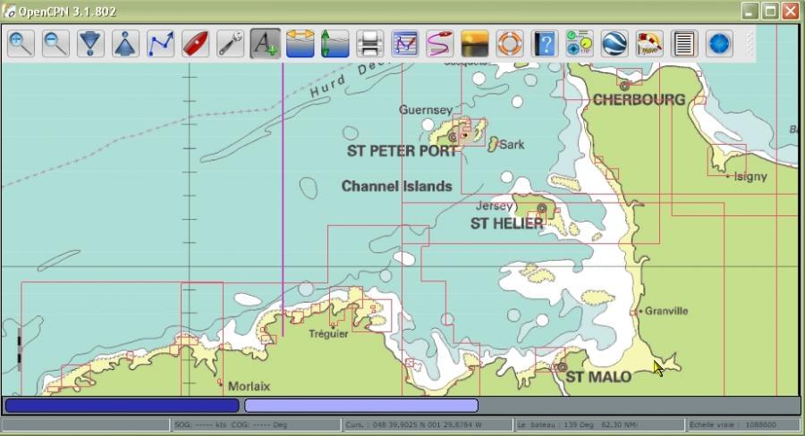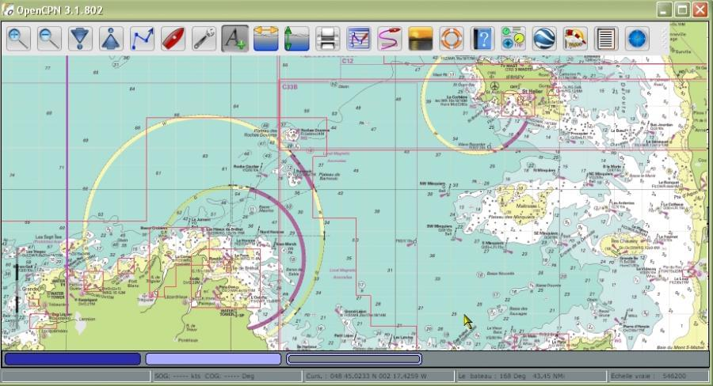
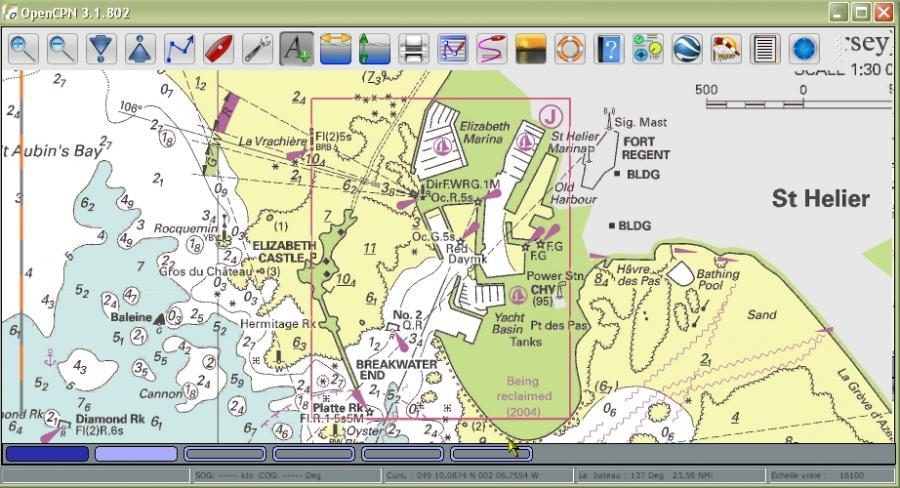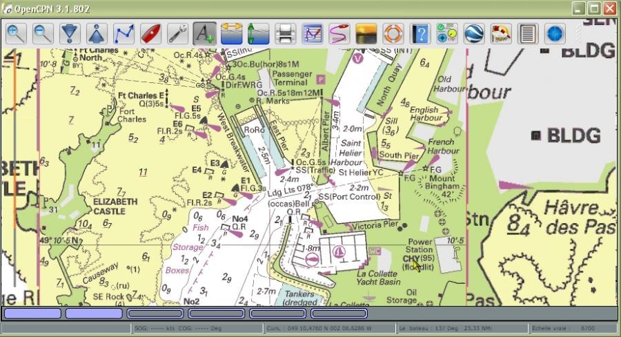